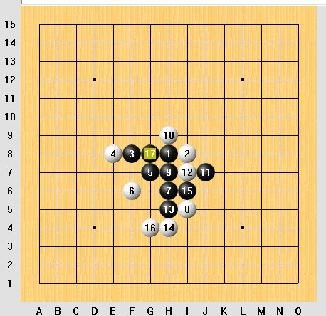
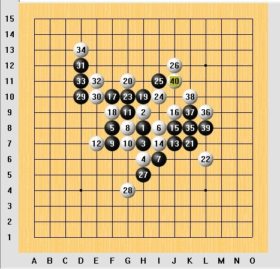

记第5届北京高校五子棋精英赛
#1 记第5届北京高校五子棋精英赛 作者：心上人 发表时间：2010-5-24 23:51:56
5.22和23在交大举办了第5届北京高校五子棋精英赛，去年11月本应在女院举行的高校赛由于当时H1N1的缘故取消了，所以这次是事隔去年5月首经的第4届北京高校五子棋精英赛整整一年后又一次高校五子棋赛。本次比赛由于主办方交大限制了外援的参与，所以高手比上次较少，但是更能体现北京高校的真正实力。此次比赛依旧分为有禁组和无禁组2个组别，有禁组执行三手交换五手两打，无禁组执行1手交换。
由于下周考试周的缘故，这次我们棋社所派出的阵容只能勉强凑出1队有实力的，2队只能是大一的几个没什么经验的新生真是让人没有报太大希望，目标就是保住前三再图后事。这次一队的阵容为我，李洋，高洋，孙宇航，孙云鹏。单就这1队阵容而言其实还可以，不过王晨打无禁，和李元隆的爱实验不参赛行为还是增加了一些不确定因素。
到了交大拿到了秩序册横扫一遍团体实力能和我们抗衡的应该就是HAIZI团和北大1队了（其实还有交大1队不过他们不把自己阵容写到秩序册上= =）不过HAIZI团不算团体成绩这样基本就是我们，北交1，北大13个队的争夺了~
交大是自己的一块福地因为前不久刚在这里参加棋王争霸赛拿了个冠军，虽然那次没有高手去但是有了那次的经验还是给自己这次树立不少信心- -于是默默唧唧的在家看了几眼很久没看的谱比社团晚出发半小时来到了交大门口与大家汇合。第一天5轮上午2轮下午3轮，第二天2+2=4轮，总共9轮。70多人的比赛感觉上不需要比9轮，不过感觉比的多一点更能避免某一轮的失误造成棋手排名过低的情况。也就是说可以更好的体现真实实力。
第一轮
胜 北京科技大学 朱美军（女）瑞星 交换 5A=H6

第一轮对手不强没什么可说的，17本来是自己的误算以为能上下双杀，下完才发现上面有反4好在对手没发现，在上面把活三盖了，于是下面2步VCT。值得遗憾的是最后这个对手弃赛了使我最后小分在同分选手里最低。这一轮孙云鹏和羔羊不约而同的选择战术性的让了一盘以让后面的棋好下。孙宇航和李洋各自取胜。
第二轮负北京交通大学肖涵 松月 不换 5A=I9 （谱不全）

对手是前不久期王争霸赛的对手，当时和他下也是我开，开的是松月，这次考虑再三还是选择了自己最近下的较多的松月。11走后他的12让我没有想到，考虑许久是在左边开始发展还是右边继续做棋，最终选择了后者~21手走后感觉自己黒棋下的形式不错 准备进攻了，谁知道22手他没有挡中间而是盖了外面，然后自己也没有细算下路有没有杀盲目的把23-G10活了，实际上后来拆棋发现23-K8是必胜的。25手下完以后40分钟共用时已过马上就要进入拍表时间，这时自己貌似看到上路能V出来……但是31走完才发现有反。后来由于时间问题没有记谱，上路和下路黑白还是进行了一些交换。到了左边黑棋继续做棋当做到图上39点时漏看8,2,24的眠三，在全盘控制对手连个活三都没有的情况下他唯一一个活三把我干掉了。
这一轮我和孙云鹏败，孙宇航羔羊李洋胜。
第三轮胜北京交通大学万磊 疏星 交换 5A=G8
#2 Re:记第5届北京高校五子棋精英赛 作者：路痴 发表时间：2010-5-25 11:23:39
.......好怀念以前的北京高校赛....哎
祝贺联大应用文理学院~~~ 老朋友 嘿嘿
［ 掌棋宣传员 于 2010-5-28 13:39:26 时花20金币送鲜花一朵］
#3 Re:记第5届北京高校五子棋精英赛 作者：虎哥 发表时间：2010-5-25 12:48:28
楼上的姐姐，完全爱你！
祝贺联大！欢迎常来北交活动！
#4 Re:记第5届北京高校五子棋精英赛 作者：水月 发表时间：2010-5-25 13:05:37
拍钟王。。。莫不是曹冬门下？